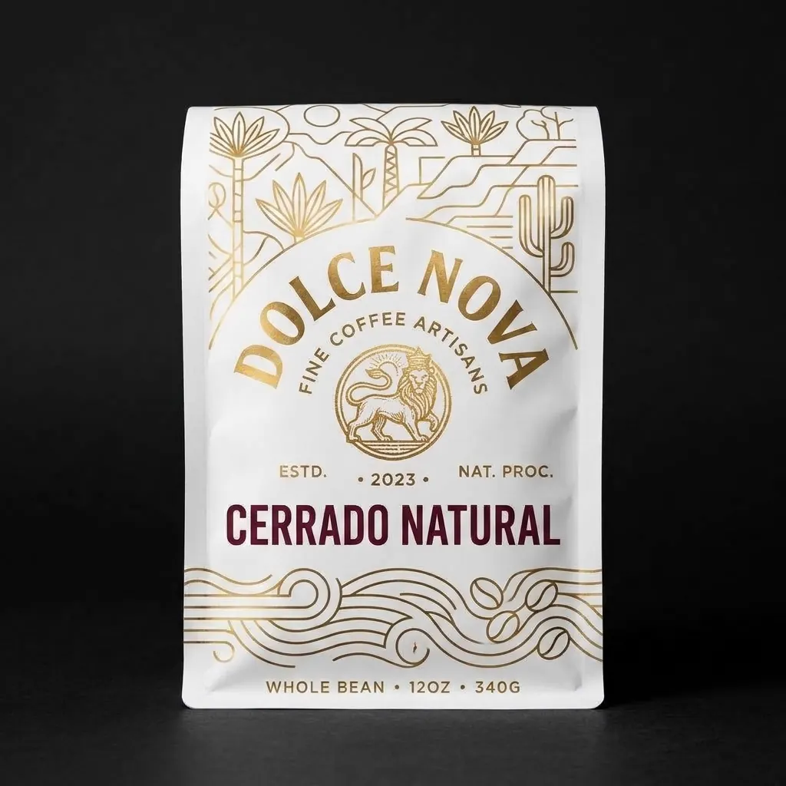
Demo shop: nothing is charged at checkout.
Single-origin coffee, roasted in small batches.
Six coffees, whole bean or ground for espresso and filter. 340 g from €15.50.
The coffees
Six single origins, from a bright Kenyan to a chocolatey Brazilian. Each comes whole or ground to order.


About Dolce Nova
We buy green coffee from a few farms we know, roast it in small batches, and pack it in bags worth keeping.
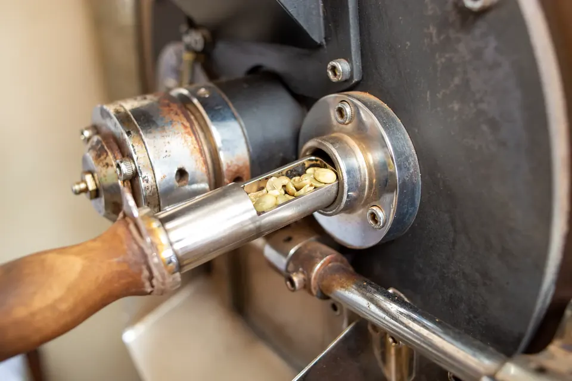
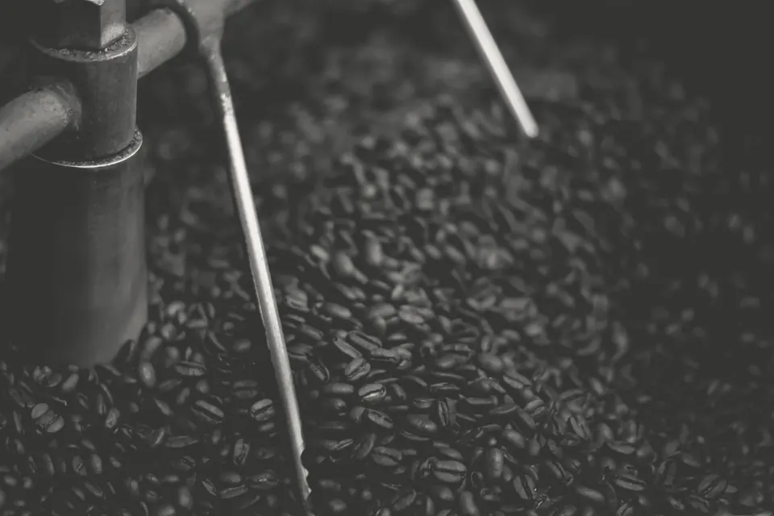
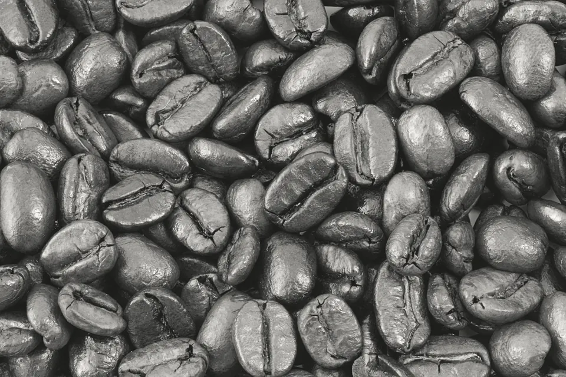

Origin
Green coffee, sorted by hand.
Coffee is the seed of a cherry: picked, washed, dried, then sorted by hand, because a few faulty beans can flatten a whole batch.
See it roastRoast
From green bean to dark.
Four batches go into the drum together. Turn up the heat and watch each one pulled at its stage.
-
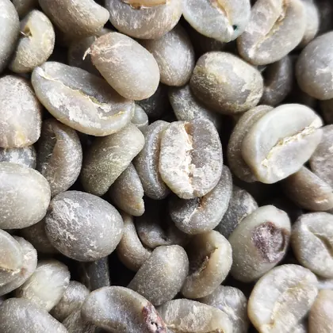
Green
-
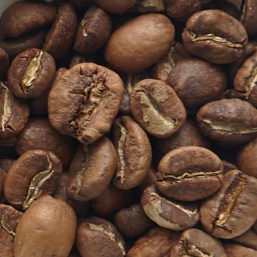
Light
-
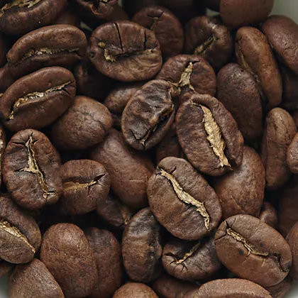
Medium
-
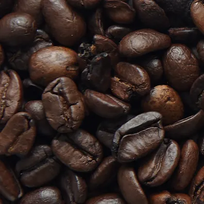
Dark
Raw. Green coffee at room temperature: dense, grassy and about 11% water.
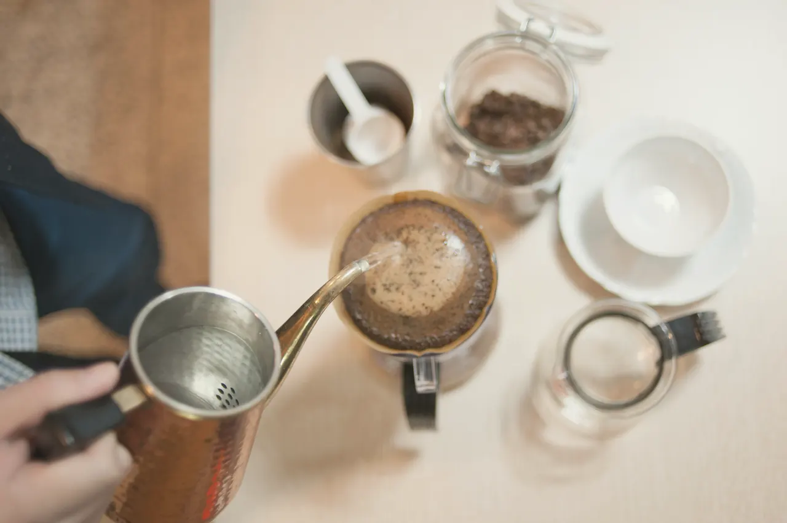
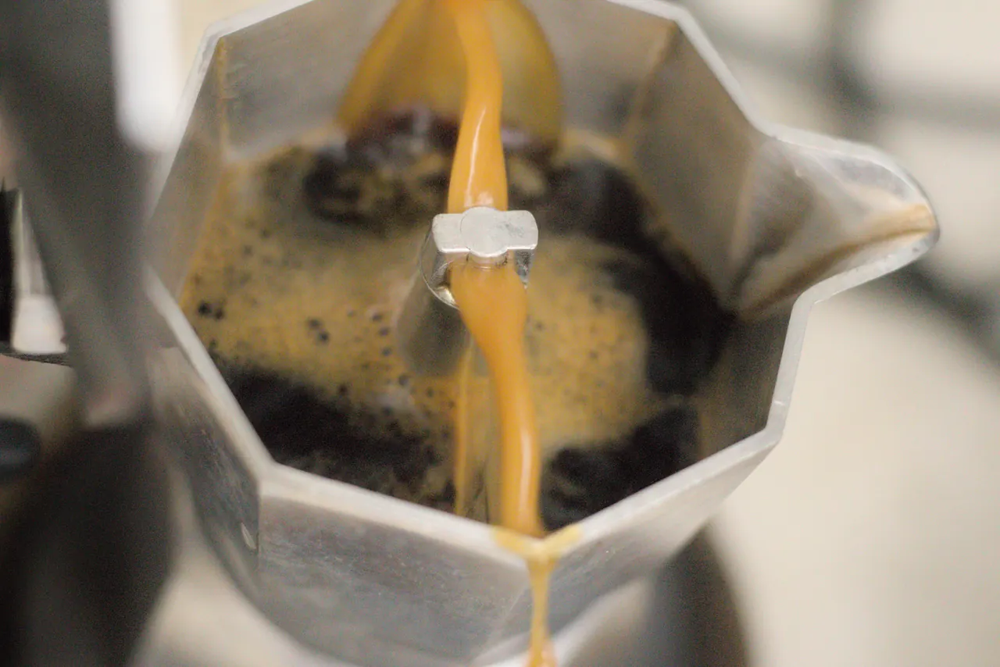
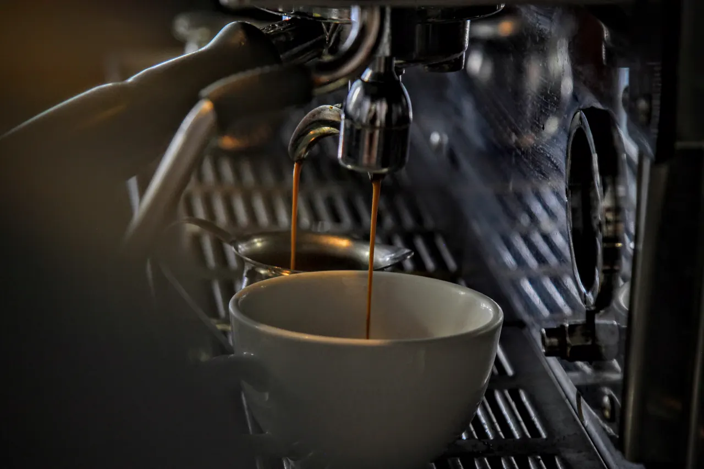
Brew at home
Three ways to brew it.
Start from one of these, then adjust to taste.
Pour-over
- Coffee
- 15 g
- Water
- 250 g at 94 °C
- Grind
- Filter
- Time
- About 3 min
- Rinse the paper filter with hot water, then pour that water away.
- Add 15 g of coffee ground for filter and shake the bed level.
- Pour 40 g of water to wet every ground and wait 30 seconds while it blooms.
- Pour the rest in slow circles, reaching 250 g by 1:30.
- Let it drain. It should finish near 3:00: faster means grind finer, slower means coarser.
Try it with Yirgacheffe Konga, ground for filter.
Moka pot
- Coffee
- A level basket, about 15 g
- Water
- Hot, to just under the valve
- Grind
- Espresso
- Time
- 4 to 5 min
- Fill the base with hot water to just under the valve.
- Fill the basket with coffee ground for espresso and level it. Do not press it down.
- Screw the pot together with a towel (the base is hot) and set it on a medium heat, lid open.
- When coffee starts to rise, turn the heat down: it should run slow and honey-coloured.
- As soon as it gurgles and turns pale, take it off and cool the base under the tap.
Try it with Cerrado Natural, ground for espresso.
Espresso
- Coffee
- 18 g
- In the cup
- 36 g
- Grind
- Espresso, or whole bean for your grinder
- Time
- 25 to 30 s
- Dose 18 g into a dry basket and settle it level.
- Tamp once, firm and flat.
- Lock in and start the shot straight away.
- Stop at about 36 g in the cup, 25 to 30 seconds after you started.
- Sour and fast: grind finer. Bitter and slow: grind coarser. A grinder at home makes this easy.
Try it with Huila La Plata, whole bean or ground for espresso.
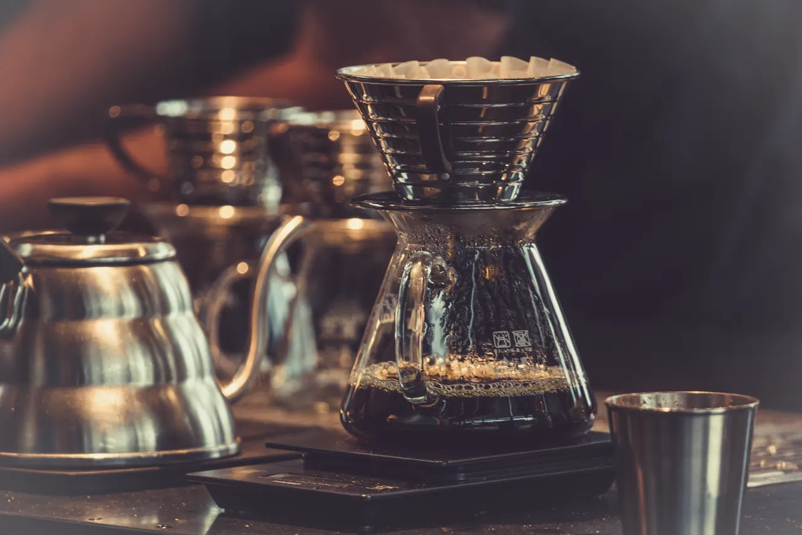